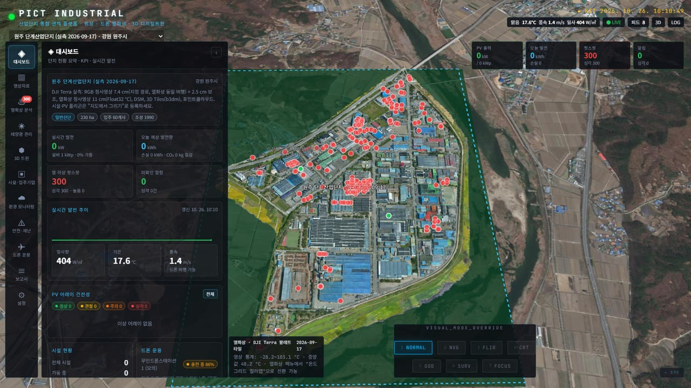
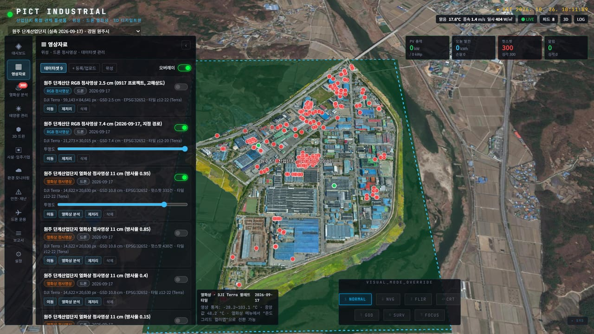
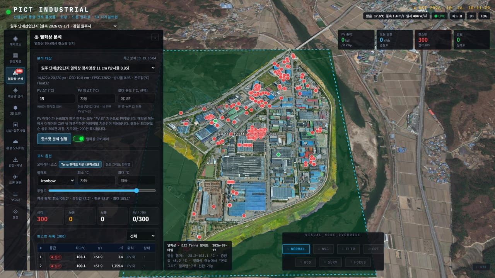
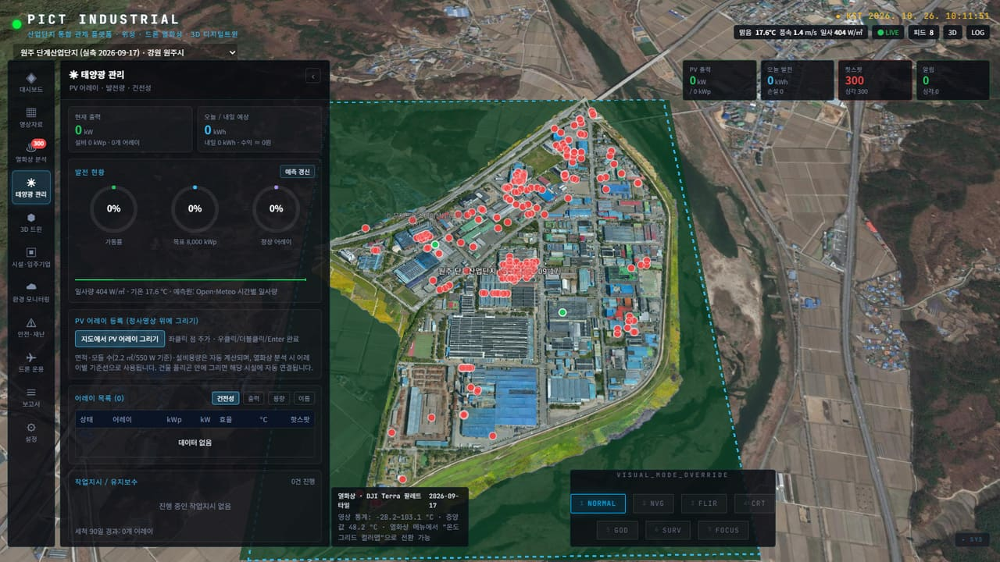
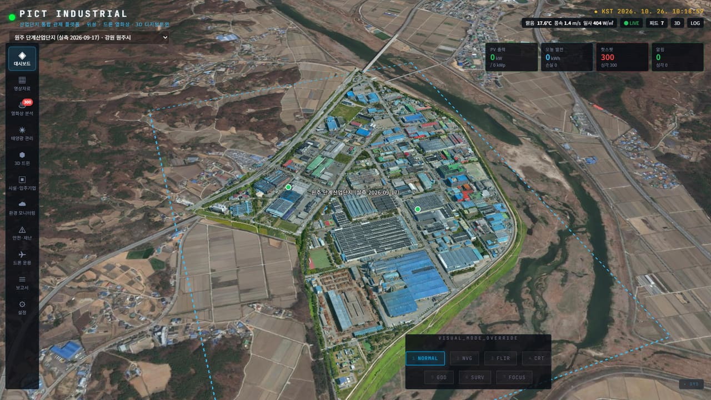
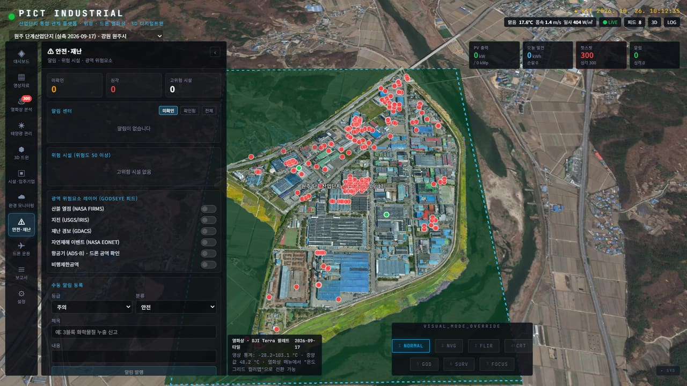
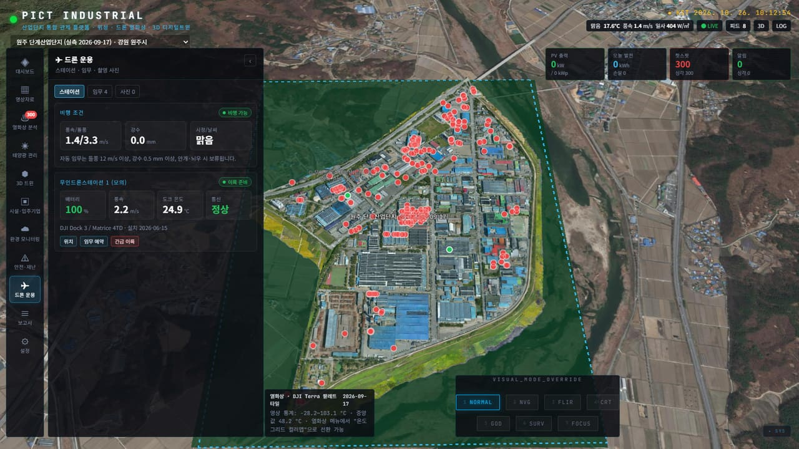
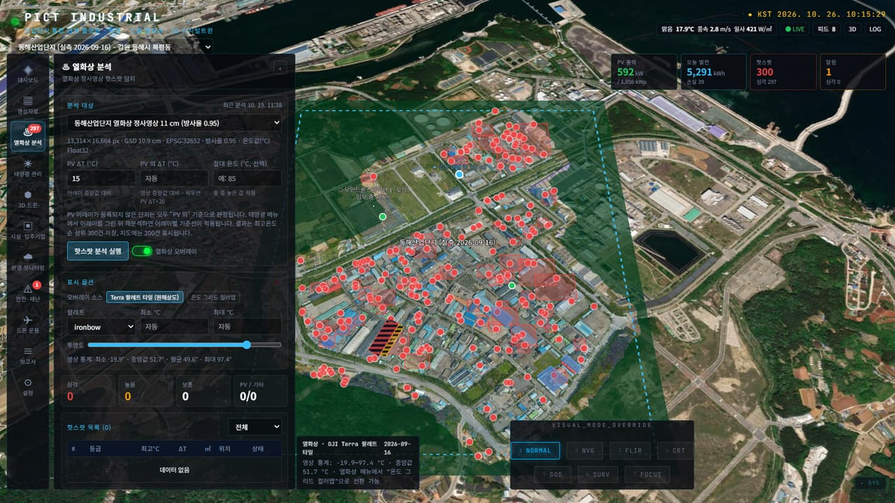

드론 정사영상, 열화상, 3D 모델, 사진, 센서가 서로 다른 도구와 폴더에 있어 한 번에 보기 어렵습니다.
태양광 패널 이상과 열 이상은 육안·수동 판독에 의존해 발견이 늦고 기록이 남지 않습니다.
점검 후 결과를 지도·표·권고 조치로 정리해 보고서를 만드는 데 반복 수작업이 필요합니다.
DJI Terra 등에서 나온 실측 산출물을 그대로 등록하면, 지도 위 시각화 · 열화상 자동 분석 · 태양광 발전 관리 · 3D 트윈 · 점검 보고서까지 한 화면 흐름으로 이어집니다.



등급: ΔT ≥ 30 심각 · ≥ 20 높음 · ≥ 10 보통 · 그 외 낮음 (IEC TS 62446-3 참고)



알림 센터, 위험 시설, 산불·지진·재난경보 등 광역 위험요소

스테이션 상태, 임무 예약, 촬영 사진 EXIF GPS 지도 표시
종합 점검 보고서 자동 생성, 권고 조치, 인쇄·PDF·JSON
| 단지 | RGB 정사영상 | 열화상 | 핫스팟 |
|---|---|---|---|
| 원주 단계산업단지 | 7.4 cm · 2.5 cm | 11 cm | 331건 탐지 · 300건 저장 |
| 동해산업단지 | 2.6 cm | 11 cm | 69건 |

React 19 · Vite 7
CesiumJS · Zustand
Node.js · Express 5
SSE 실시간 갱신
GDAL
XYZ 타일 · 온도 그리드
JSON 파일 DB
외부 Terra 폴더 참조
실제 패널 폴리곤을 등록해 어레이별 기준선으로 정밀 판정하고 발전 손실을 산정
인버터·센서 실시간 연동으로 모의 값 대신 실제 발전·환경 데이터 표시
추가 산업단지의 Terra 프로젝트 등록, 정기 촬영 간 변화 비교
보유 중인 드론 산출물만으로 바로 시작할 수 있습니다. 시범 단지 1곳을 선정해 등록 → 분석 → 보고서까지 시연해 보시기를 권합니다.